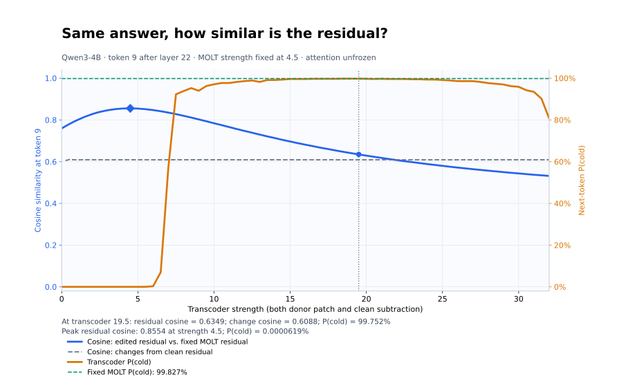
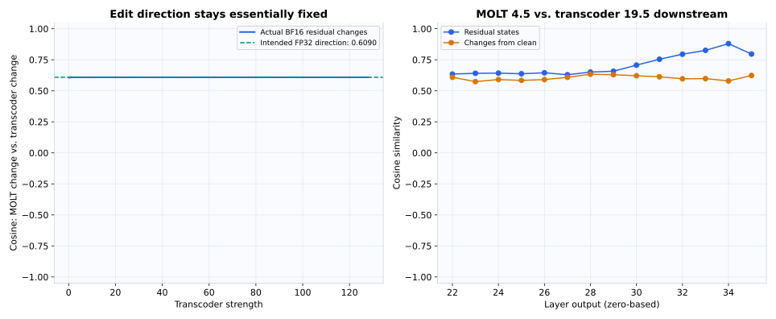

12 October 2026 · SPAR Model Psychology · Qwen3-4B
Same answer, how similar is the residual?
The MOLT intervention is fixed at 4.5. Only transcoder strength varies. Both use normal, unfrozen attention and edit layer 22, token position 9.

At transcoder strength 19.5: residual cosine 0.634858, P(cold) 99.7523%.
The fixed MOLT has P(cold) 99.8269%. The highest measured residual cosine is 0.855387 at strength 4.5, where P(cold) is only 0.0000619%.
What was compared
The main blue curve compares the actual residual vectors at token 9 immediately after the layer-22 MLP residual addition, before layer-23 normalization. It includes the shared clean residual.
A separate measure compares each edited residual minus its clean residual. A large cosine between full states can arise from their shared clean component. Neither metric alone establishes that the two edits use the same causal mechanism.

The intended injected-direction cosine is 0.608969. Multiplying a fixed direction by a positive scalar cannot change this angle. Small variations in the measured change cosine arise from BF16 rounding at the write and residual addition; later layers can change the direction through normal model computation. At strength zero, the edit cosine is undefined.
Exact intervention
Receiver: What is the opposite of "small"? Reply with only the word, nothing else.
Donor: What is the opposite of "hot"? Reply with only the word, nothing else.
Zero-based layer 22; token 9 is small in the receiver and hot in the donor. Next-token probabilities are read after prompt token 28. Thinking is disabled.
MOLT: T2339 (small), T941 (hot); fixed strength 4.5
Transcoder: F38866 (small), F85454 (hot); strength s varies
edited MLP output = original receiver MLP output
+ strength * sum(donor contribution - receiver contribution)
MOLT contribution = gate(x) * U * V * standardized_input(x)
* saved output standard deviation
Transcoder contribution = activation(x) * decoder vector
Both clean hot activations and donor small activations are reported in the raw data. Full MOLT output contributions are copied; no U/V weights are replaced. Original MLPs recompute normally. There are no attention patches, no full MOLT/transcoder replacement, and no direct edits at other layers or positions.
Validation
72 prespecified strength values; downloaded hashes verified; cosine and probabilities independently recomputed from exported residual vectors and full next-token logits. Zero-strength recovery, intervention repeats, restored clean runs, and unchanged upstream residuals passed. Downstream attention changed for both methods.
Single-prompt probabilities are not accuracy rates. Cosine does not measure equality of vector magnitudes or prove a shared computation. The plot's 0–32 view is expanded below to show all tested strengths.
Data and reproduction
CSV · Raw results and protocol · Residual vectors · Full next-token logits · Independent verification · Plot PDF
All strength values
Resource cleanup
SPAR instance 55565002 was destroyed after the local backup and independent audit passed. Provider reads confirmed no remaining instances or storage volumes. Ongoing compute and storage cost: $0/hour. Estimated rental cost including disk: $0.050; bandwidth is additional and negligible.
Cleanup verification · Reproduction instructions and source